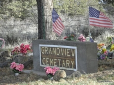
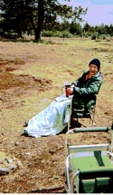
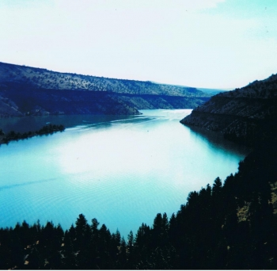
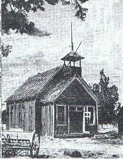
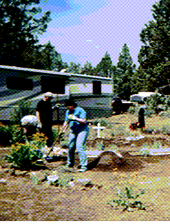
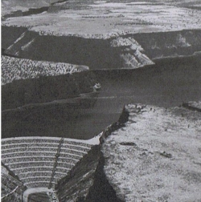

|
|
The history of the West written in it's ghost towns. Some get resurrected as romantic memorials, theme parks to the good old days. Some are preserved as Western museums, with buildings frozen in time.
And then, some are just ghosts, returning their buildings to the land and only living on in stories. Such were Grandview and Geneva, the towns that sprung into the lower desert of Central Oregon in 1910. |
|

Several miles up a dirt road past the Cove Palisades State Park near Culver, Oregon is Grandview Pioneer Cemetery. For fourty years I have been visiting the cemetery where the aged headstones are the only remaining memory of the once thriving farming community. Five years ago I came across Hope Nance, the last remaining member of the community, sitting by her husband's grave planning her own funeral. For the next five years Hope and I traveled the old roads, finding her farm, school, Grange Hall and the corrals that once dotted the canyon. Going through old maps, historical records, photo albums and newspaper archives we raconsructed the memories of her childhood. Hope passed away last spring and my book about this journey will be out in 2018. Here is a recent article I did for the Jefferson County Historical Society's publication. |
|
For the Jefferson County Historical Society A History of Grandview, Oregon (c) Guy Swanson |
|
In 1965 Round Butte Dam rose up to connect the deep canyon walls of the Deschutes River, where it was joined by the Metolius and Crooked Rivers to create Lake Billy Chinook. The new lake was named after the Wasco Indian youth who accompanied Kit Carson and Captain Fremont through the area in the mid-1800s. Cove Palisades State Park was then relocated from its original site along the Deschutes River where it had been since 1941. Once the lake filled, two new bridges were built to connect the Cove to the ghost town of Grandview, a farming community that had existed roughly from 1910 to 1930. Bordered on the north by the Metolius River, on the east by the Deschutes River, on the south by Squaw Creek Flats and on the west by the present-day Camp Monte campground, the tax rolls of 1917 list fifty-five families as residents of Grandview. |
|

Until the 1960's Grandview harbored its mysteries in the desolate, undisturbed cabins, outbuildings and barns that had once been a thriving farm community.
Grandview School still stood, with desks, books and a blackboard that carried messages from those who traveled through. The lonely Grange Hall stood like a forlorn ghost, the place where once farmers gathered every other Saturday for putlucks, socials and dancing. By the mid 1970s all evidence of Grandview's existence disappeared as scrap dealers, souvenir hunters and collectors stripped the area clean. Nothing remains to this day except desolate rock fence lines that mark forgotten dreams and silent voices that rest in Grandview Cemetery. The cemetery, sometimes called Geneva Cemetery, dates to the late 1800s when Nick Lambert, one of the early homesteaders, donated the land, Every year on the Sunday of Memorial Day Weekend those with relatives and connections to Grandview hold a gathering. They invite all who are interested in learning about the history to join in potluck. Desendents of the Nance, Glover, and others families numbering nearly one hundred attended this year. |
|

Accessible only from the South across Squaw Creek Flats, this part of the lower desert was mainly grazing land for cattlemen who brought their herds over the mountain trails from the Valley, and either returned them in the fall or drove them on to cattle markets in Idaho, Colorado, or California. The Lower Desert is a Plain in Jefferson County, Oregon, at an elevation of 2,897 feet. The primary coordinates for Lower Desert places it within the OR 97734 ZIP Code delivery area. Early memories of the area describe it as more or less a big meadow of waist high bunch grasses. You could see wranglers and cattle herds as far as one-half mile away. This where the story of Grandview began, where the Cascade mountains met the sky in a land that time forgot. David and Margaret Allingham met on a wagon train crossing to Oregon in 1852 to settle in the lower desert.David crossed by horseback to the Willamette Valley and returned with cattle and horses to start the Allingham Ranch along the Metolius. The Allingham House became the first Sisters Ranger Station in 1906, occupied by the new Forest Ranger Perry South. Bill and Matty Edmunson settled in Grandview in 1885 on the plateau above the confluence of the Metolius and Deschutes river. At that time they had to travel to The Dalles for their annual shopping trip. Since there were no bridges on the Crooked or Deschutes rivers it took an extra day's travel to approach Grandview from the South. The Edmonson's had the first threshing machine in the settlement, brought from Salem over the old Santiam Road. The winter of 1886–1887, referred to as the "double winter", was extremely harsh for much of continental North America, and is most known for its effects on the Western United States. Five foot snows and minus fifty degree temperatures w iped out the cattle. horses, game animals and settlers who weren't prepared for the harsh conditions. (https://en.wikipedia.org/wiki/Winter_of_1886%E2%80%931887) After the double Winter Nick Lambert made his way to the lower desert and built a cabin in Allen Canyon (known today as Big Canyon), about two miles from the southern shore of the Metolius. There were seven springs on his property, and the rising canyon walls on the north and south led into a descending canyon that flowed east to overlook the Deschutes river cliffs. Big Canyon was a natural corral for Nick to begin his cattle operation |
|
In 1902 Nick and two other ranchers formed the Black Butte Land and Livestock Company that included five ranches in the Grandview and Sisters area. These included the Nye Ranch at Grandview, the Allingham Ranch on the Metolius, Squaw Flat Ranch at Geneva and Swamp Ranch at Black Butte. Over the next 30 years Nick built his herd to a sizable number and his land holdings to 4500 acres.
Harry Heising arrived in Bend in 1902 with his parents, Dan and Alice Heising. Dan took his son on a fishing trip up the Metolius, near where Camp Sherman is today, and fell in love with the river. Lee Clover, an earlier homesteader, was ready to sell his land along the river. Dan bought it and opened the first resort on the Metolius.
Probably nobody is more quoted in books and articles about the area than is Harry Heising, He began his serious work-life at the age of ten, driving a freight wagon from Bend to the railhead at Shaniko. He married Vesta in 1920, started a family, and helped build the log schoolhouse in Camp Sherman where his son, Dick Heising attended first grade.
Robert (Bob) Monical was another major cattle rancher in the Grandview area, married to Letha Parkhurst. He came to Grandview as a child from Kansas in the early 1900's with five siblings and his father, John T, after his mother died of “milk leg” following childbirth. Milk leg is an extreme swelling of the leg following childbirth caused by thrombosis of the veins. (MONICAL FAMILY TREE published in 1981. by Mrs.Kenneth Kuhns 790 Hope Dr. Forsyth, IL 62535) |
|
John T. Remarried; his second wife was named Geneva. He petitioned for and built the first post office in the area in 1914, about 5 miles SW of Grandview. Appointing his wife as postmistress, he called the town Geneva. (Raymond R. Hatton, Oregon's Sisters Country, Bend, Ore : Geographical Books, c1996 page 263).
Alonzo Lee Nance, his wife Vetra and their two boys arrived from the silver mines of Idaho in 1917. Alonzo, nicknamed Zonie, found work at the feed store in Culver and Vetra birthed three more children before another pregnancy took her life in 1923. Grandma Nettie, Zonie's mother, moved from North Carolina to help and brought three of her other children with her. There are twenty-three extended members of the Nance family that are buried at Grandview Cemetery.
It is believed that an article in the German Methodist publication, Christliche Apologete, in the spring of 1902, drew Charlie and Anna Wasmundt and their family to the area. They homesteaded a section along Graham Road, raising wheat, and were soon joined by other family members who also filed claims. Because of their numbers, they were referred to as the first family of Grandview. These are only a few of the early arrivals that formed the core of early settlers in the lower desert.
The Panic of 1907 was a financial crisis that began in the Eastern banks and eventually spread throughout the nation when many state and local banks and businesses entered bankruptcy. Unemployment more than doubled, the Stock Market fell by half, and a new wave of emigrants from the East and Midwest heeded the siren call of free land and a chance at a new life in Central Oregon. Between 1905 and 1920, more land in the American West was claimed under the federal homestead laws than had been claimed during the previous four decades of the Homestead Act. (https://oregonhistoryproject.org/narratives/high-desert-history-southeastern-oregon/a-new-century-last-land-rush-and-later-boom-bust-times/dry-farm-homesteading/ ) It made more of the marginal lands attractive to homesteaders and over 50 families moved to this promised land.
In 1907 Bend recorded a rainfall of 25.75 inches, and crops flourished in the volcanic soil. The Madras Pioneer reported that settlers planted orchards and grew bountiful crops of potatoes, onions, corn and other vegetables, rye, wheat, clover and alfalfa. When World War 1 broke out, Central Oregon began shipping wheat, cattle, horses, wool, and other war needs to England. The new Panama Canal provided a shorter route from Central Oregon to Liverpool and drove commodity prices to new heights.
In March of 1911 eighty-five residents and property owners of lands west of the Deschutes signed a petition asking for bridges over the Crooked and Deschutes rivers. “some time ago cables were thrown across the rivers and communications were thus established across the rivers”....”Since that time foot bridges have been established.” (Madras Pioneer March 23, 1911)
The new bridges provided access to Grandview from the burgeoning new towns of Madras, Culver, and Metolius. A narrow, switchback road, called “The Grade” hugged the cliff, rising over four hundred feet to the an outcropping called Canadian Bench. A portion of that road can be seen today, emerging from the lake and traversing the canyon walls up to Canadian Bench, where it makes another climb to Graham Road. Located along Graham Road were Bert Akin's (sometimes spelled Burt) general store, the Grange Hall, and nearby stood by the Grandview School.
Wannie Osborn, an early Grandview school teacher, wrote of her experiences. “We crossed the Grade to Grandview, which was by the way of two slow horses and a hack........the school house was new and had many fine books...children came on foot and horseback from many miles.” (quoted from an unpublished manuscript, June 23, 1960 by Wannie Ralston Osborn from Oregon Sisters Country page 265)
The teacher lived in a small cabin behind the school, and the remains of the ice house still stand today. By 1920 the school was filled to overflowing with children during the week and on Sunday the school served as a church for a circuit minister.
Grandview chartered it's first Grange in 1912 and every other Saturday there was a Grange meeting followed by a dance. The Kalama's were musicians from Warm Springs who sometimes played until daybreak on Sunday morning. The Grange was the center of Grandview social life, with pie and box socials, card playing and a gathering place for children and adults alike.
The project to bring water to Grandview was noted in the Madras Pioneer in October, 1915. when it carried the headline: “Grandview District Will Irrigate the Land”. It stated that the settlers voted a $680,000 bond by an overwhelming 64-2 vote, it would be called the Suttle Lake Irrigation District of Grandview. But the project to bring water from Suttle Lake was stymied by problems from the beginning. Postwar commodity prices dropped and the bond failed to find an underwriter. By 1923 the Suttle Lake project's water rights were lost.
From 1917 to 31 Central Oregon entered a very dry period punctuated by brief wet spells. (https://www.oregon.gov/LCD/HAZ/docs/3.ORNHMP12-Drought.pdf) As the land got drier, water became the deciding factor in the success or failure of every farmer. Water could be found in hand dug wells at less than twenty feet, but dried up by May of each year. In 1919 Frank Tate installed a ram pump to bring water up from the Deschutes river and began selling it to the farmers for fifty cents a barrel. Some farmers traveled down the Grade and loaded their water barrels from the river. A joke, often told in greeting, was that “we're moving away as soon as we haul another load of water.”
Nick Lambert grew to be one of the three biggest ranchers in the Grandview area, and in 1930 Harry Heising bought the River Ranch from Nick, adding to it until he owned 6,000 acres. This was on the point between the Metolius and Deschutes rivers and he named it the Three Rivers Ranch. Bob Monical moved to Lower Bridge and then on to Bend where he ranched.
But Grandview would not be Eden, and nature has its own rules. Stands of pine that once served as windbreaks were used for fuel, and the carpets of bunch grass no longer held the dirt to the earth. The deepening drought left the soil light on the land, and nature was about to reclaim its gift.
On April 22, 1931, Grandview met it's destiny. Farmers and families were up to their normal activities when a windstorm kicked up in Western Montana. It crossed the Panhandle of Idaho, through Washington state, and over Warm Springs Reservation. As it gained speed and crossed the Metolius River it turned into a circular pattern. The storm became a tornado.
Just as in the the Midwest Dust Bowl of this time period, effects of the drought and poor farming practices contributed to the vulnerability of the farmland. Stories about the “Big Wind” of Central Oregon come mostly from newspapers, historical records, and the evidence it left behind. The results of the storm were devestating. The Bend Bulletin of April 28, reported the loss of more than 10 million board feet of timber in the Metolius area.
“The wind blew harder until the climax that night and Wednesday morning. On Wednesday afternoon the wind stopped suddenly and there seemed to be a sort of vacuum for about three of four hours, then it started to blow the other way.” Harry Heising
“Damage to crops were heavy, fall grain was blown out, and the field had been swept clean of the topsoil in many places....it was possible to see to see the effects of the storm for many years.” Harry Heising Jefferson County Reminiscences page 162/163
Nothing could withstand the wind's fury. Old growth pines were ripped out by the roots and thrown around like saplings. Winds flattened cabins in the Metolius Valley, and ships at sea recorded in their journals the red dust that blew from the Oregon coast.
The wind stripped away years of soil to expose the bones of a broken land, leaving just enough dirt to hold the rocks together. Sagebrush grew and provided shade for the prickly juniper seedlings that took over.
Harry and Vesta Heising moved to the Portland area where they both worked in the shipyards during the war era. In 1951, after an unfruitful attempt at ranching in Grandview, Heising sold the Three Rivers Ranch, which was by then 11,000 acres, and moved to Canada. The land lay fallow and the Juniper trees thrived.
Hope and Jack left Grandview in 1934 just after the birth of their second child, and moved to Hood River where they rented a home and worked in the orchards. Later they moved to Portland, bought a home, and had two more children. Born in 1917, Hope was the last of the Grandview children, and passed away in February of 2017 at the age of 99. She was buried next to her husband, Jack, at Grandview Cemetery on April 23, 2017. |